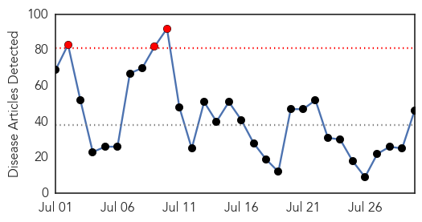
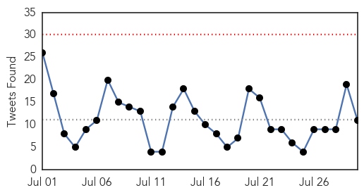
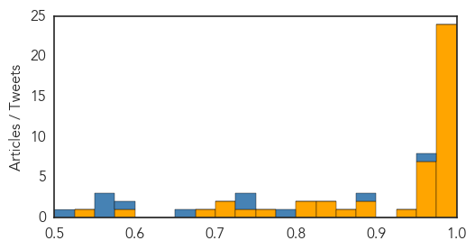

Ebola
30-Day Web Trend
3 alerts, 0 warnings

30-Day Twitter Trend
0 alerts, 0 warnings

Article Locations

Article Confidences
Top Articles:
- 0.999
- Sierra Leone faces Ebola setback; 500 under quarantine
- 0.999
- Ebola: WHO warns of more trouble ahead
- 0.999
- Sierra Leone faces Ebola setback as 500 quarantined after man's death
- 0.999
- Billion dollar Ebola fight seen as US pledges 3,000 troops
- 0.999
- Sierra Leone faces Ebola setback; 500 under quarantine
- 0.998
- Unlocking Ebola's Secrets: Part One
- 0.998
- Kaleidoscope of the International Conference on Africa’s Fight Against Ebola, Malabo, Equatorial Guinea
- 0.997
- US envoy visiting Ebola-hit Africa condemns world response
- 0.996
- Ebola in the United States — Public Reactions and Implications — NEJM
- 0.996
- Christian and Muslim leaders played “essential role” in tackling the Ebola virus
- 0.996
- Emory marks first anniversary of Ebola care
- 0.995
- UN Ebola Emergency Response Mission Ends in Sierra Leone
- 0.995
- Birth Registrations Plummet in Wake of Ebola Epidemic
- 0.995
- UN Ebola Emergency Response Mission Ends in Sierra Leone
- 0.995
- Phone Apps, Facebook, Google Aid Nigerians in Time-Sensitive Fight Against Ebola
- 0.993
- LIBERIA: 19 Released From Quarantine In Cape Mount, As ELWA Ready To Discharge 15 Ebola Survivors
- 0.990
- Liberian Doctors to Get Experimental Ebola Drug
- 0.990
- West African Food Security Post-Ebola
- 0.983
- The San Francisco Examiner : The San Francisco Examiner
- 0.983
- North Carolina County Receives Grant to Strengthen Ebola Response
- 0.982
- After surviving Ebola, Dr. Kent Brantly shares why he went back to Liberia with his family
- 0.980
- Latest WHO report: Ebola cases drastically decline in Guinea, Sierra Leone
- 0.977
- Community Trust and the Ebola Endgame — NEJM
- 0.976
- Bill de Blasio: ‘No Reason for Alarm’ Over Legionnaires’ Outbreak
- 0.966
- Christian and Muslim leaders played 'essential role' in tackling the Ebola virus
- 0.964
- Sierra Leone faces Ebola setback; 500 under quarantine
- 0.962
- New report shows crucial role played by Christian and Muslim leaders tackling Ebola
- 0.960
- Keeping the Faith: The Role of Faith Leaders in the Ebola Response - Sierra Leone
- 0.960
- Food Security After Ebola
- 0.958
- Faith leaders' “essential role” in tackling Ebola Vatican Radio
- 0.950
- PADF and Taiwan donate Ebola testing kits to Belize
- 0.943
- Investitures Start ‘26’ Celebration -42 Honored, Eight Deceased Healthcare Workers Posthumously
- 0.890
- Ebola: German Envoy Tasks Nigeria On Training Of Health Workers
- 0.877
- the Agroeconomic Origins of the Ebola Outbreak
- 0.871
- Telluride Daily Planet: The Watch
- 0.835
- FACT SHEET: The Global Health Security Agenda
- 0.834
- LCP, PREVAIL launch awareness on Ebola Vaccine Study
- 0.810
- Politics of Ebola Response Tricky for Christie, Cuomo
- 0.804
- Liberia’s Ebola fueled by distrust
- 0.754
- Could Your Cranky Tweets Shape the Future of Health Care?
- 0.729
- Dr. Peter Kilmarx appointed Deputy Director of Fogarty International Center
- 0.724
- Dr. Peter Kilmarx appointed Deputy Director of Fogarty International Center
- 0.701
- Liberia to Improve Trade Relationship With Nigeria, Articles
- 0.678
- Dr. Peter Kilmarx appointed Deputy Director of Fogarty International Center
- 0.587
- Life After Ebola: Liberia's Invisible Babies
- 0.543
- Ellen extols members of the Diplomatic Corps
Top Tweets:
- 0.988
- Guinea. Neoliberal Ebola: The Agroeconomic Origins of the Ebola Outbreak http://t.co/sRaRK8bXwY
- 0.958
- The Ebola outbreak has been "nearly over" for months. So while "Ebola fatigue" is understandable, it's also potentially extremely dangerous.
- 0.951
- Sierra Leone Faces Ebola Setback; 500 Under Quarantine - ABC News http://t.co/uWQ9ajb0hM ebola EVD
- 0.949
- Life after Ebola: Liberia's invisible babies - Al Jazeera America http://t.co/xkcCRF5dUI ebola EVD
- 0.937
- Liberia's Ebola fueled by distrust - The New Dawn Liberia http://t.co/BzQU8pC453 ebola EVD
- 0.894
- RT: Life after Ebola: Liberia's invisible babies: Last year's Ebola outbreak, which killed over 4,0... http://t.co/fS1FITSz8i Eb…
- 0.888
- Local health leaders prepare in case of Valley Ebola outbreak - http://t.co/SVUeuHUtQO http://t.co/YLaAlCJHEL ebola EVD
- 0.873
- .@qz documents the unsung heroes of the Ebola fight who need our help. Read more: http://t.co/0EiGmc5Tls
- 0.815
- Africa Stop Ebola on en parle aussi à RFI ! http://t.co/RAkMhzj9Xt
- 0.776
- CommunityTrust and the Ebola Endgame http://t.co/qs2zWvVPe0
- 0.755
- Manamba Kante, la grande gagnante du concours Africa Stop Ebola ! Découvrez un extrait de sa prestation hier soir... http://t.co/A7P3YwlFv9
- 0.751
- After surviving Ebola, Dr. Kent Brantly shares why he went back to Liberia ... - Fox 59 http://t.co/gt1H57S7gq ebola EVD
- 0.751
- After surviving Ebola, Dr. Kent Brantly shares why he went back to Liberia ... - Fox 59 http://t.co/dBmGVk3fz8 ebola EVD
- 0.751
- After surviving Ebola, Dr. Kent Brantly shares why he went back to Liberia ... - Fox 59 http://t.co/Qp48zEt3T6 ebola EVD
- 0.704
- .@USAID seeks to develop strong partnerships in Ebola-affected countries. Learn more: http://t.co/SRUfXUfOfa Ebola
- 0.669
- Map Operations Update - Response to the Ebola Outbreak, as of 14 July, 2015 https://t.co/rG1SAe6v6n via
- 0.664
- Liberia Begins Third Ebola-Free Countdown - http://t.co/NaiI6Jl8yj http://t.co/pz0dmE8Mpq ebola EVD
- 0.658
- North Carolina County Receives Grant to Strengthen Ebola Response - Emergency Management http://t.co/d7hX54oCJa ebola EVD
- 0.652
- Ebola Deeply reviews Called for Life, a memoir by Kent and Amber Brantly. Kent contracted Ebola in Liberia last year http://t.co/j7Hw3VlcBK
- 0.544
- Life after Ebola: Liberia's invisible babies - Al Jazeera America http://t.co/73EMpTKImH
- 0.533
- Book Review: Called for Life, by Kent and Amber Brantly July 30th, 2015 · 2 ... - Ebola Deeply http://t.co/t6UhnqI6e2 ebola EVD
- 0.524
- Liberia's Ebola fueled by distrust - The New Dawn Liberia http://t.co/kriEhUqoz8
- 0.508
- AfricaStopEbola Guinée: un concert à Conakry pour sensibiliser à la lutte contre Ebola http://t.co/QrubGIWFou via
Dengue Fever
30-Day Web Trend
0 alerts, 0 warnings

30-Day Twitter Trend
0 alerts, 0 warnings

Article Locations

Article Confidences

Top Articles:
- 0.996
- Update: Dengue Fever Outbreak declaration includes Samoa now
- 0.993
- Warning! Children At Risk – Severe Dengue Can Kill « Karen News
- 0.978
- Health dept fears outbreak of diseases in flood-hit areas
- 0.817
- Flood aftermath: Provinces start reporting disease outbreak
- 0.799
- Students learn how to avoid catching dengue
- 0.674
- 30-fold rise in dengue cases worldwide in last 50 years, says MoS Health Shripad Naik
- 0.615
- Health Dept fails to devise strategy to control dengue
- 0.562
- 30-fold rise in dengue cases worldwide in last 50 yrs: Naik
Top Tweets:
- 0.584
- Flavivirus news: A Dengue Fever Q&A - Pollstar: A Dengue Fever Q&APollstarFor the uninitiated, ... http://t.co/bl9S5LBY9d pathogenposse